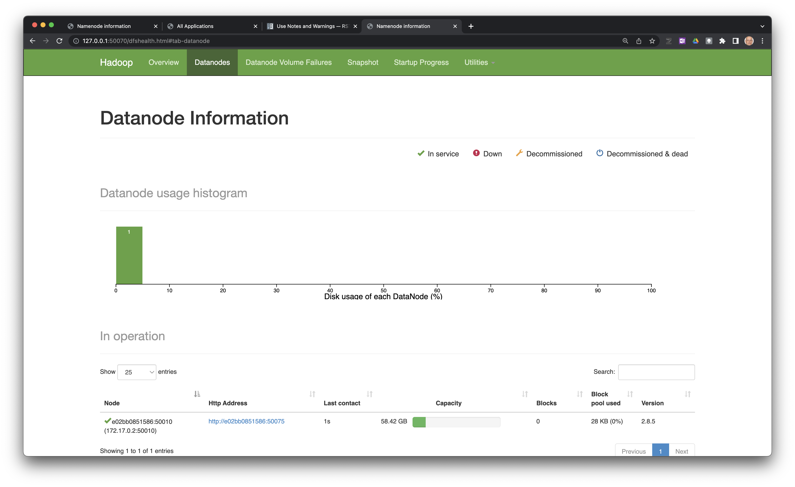
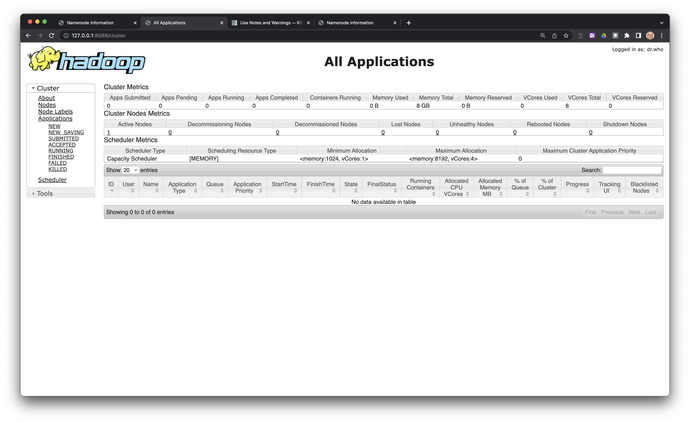

Ejecución de una instancia de Hadoop en Docker
Última modificación: Mayo 13, 2022
En esta lección se explica como tener acceso a contendor de Docker que ejecuta Apache Hadoop.
Creación del contendor
En el Terminal ejecute el siguiente comando:
$ docker run --rm -it -v "$PWD":/workspace --name hadoop -p 8888:8888 -p 50070:50070 -p 8088:8088 jdvelasq/hadoop:2.8.5
Como resultado debe ver el siguiente mensaje:
======================================
Hadoop NameNode at:
http://127.0.0.1:50070/
Yarn ResourceManager at:
http://127.0.0.1:8088/
======================================
Verificación de que Hadoop esta ejecutandose correctamente
Para verificar que Hadoop se está ejecutando correctamente abra las siguiente direcciones en un explorador de internet:
Como resultado debe poder ver las siguientes páginas:
 Salida del contendor
Para salir del contendor use:
$ exit